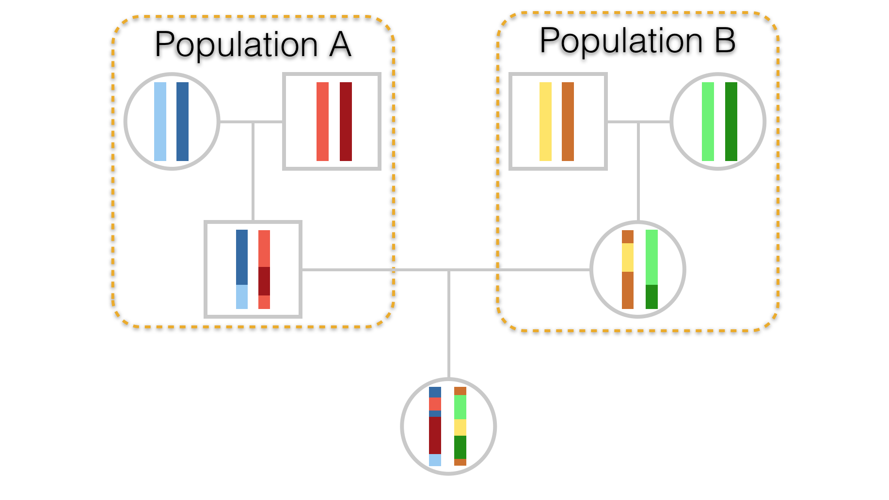
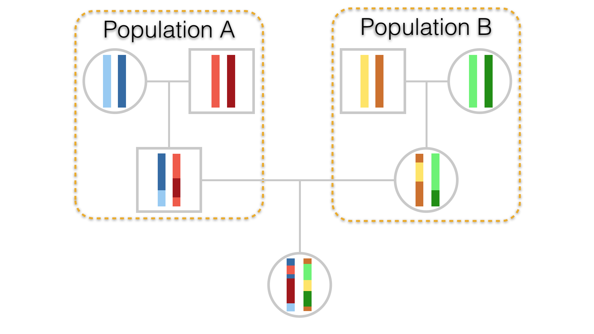
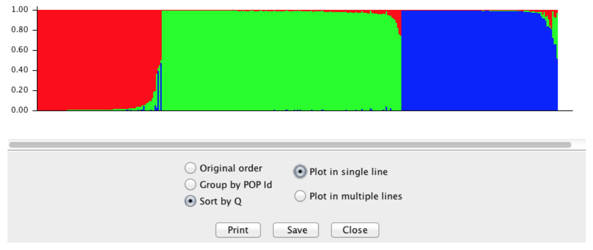
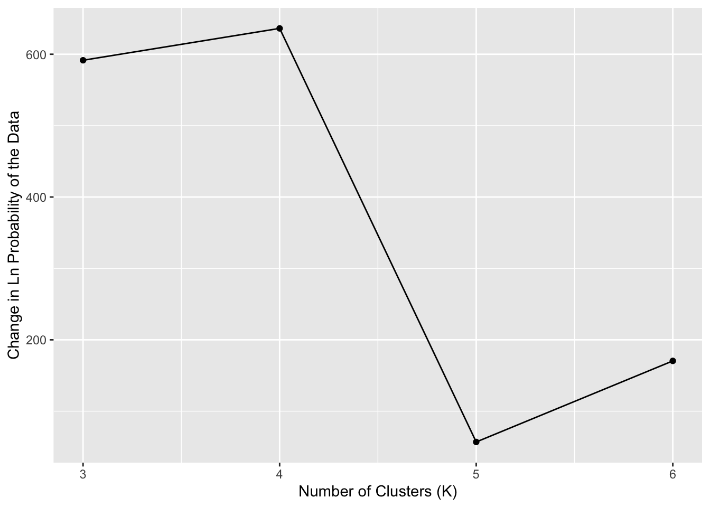

knitr::include_graphics("media/Admixture.png")

Admixture is the mixing of two or more populations whose frequency spectra may differ. If they differ considerably, then the admixed population may be easily examined to determine relative contributions of each population. In a previous chapter, we covered a phenomenon called the Wahlund Effect (Chapter @ref(wahlund-effects)). In that situation, we inadvertently mixed two populations, both of which were in Hardy-Weinberg Equilibrium, creating a new synthetic population consisting of individuals from two functionally separate populations. If this synthetic group were to mix, their offspring would contain mixtures of chromosomes from both ancestral populations, as depicted in Figure @ref(fig:admixture).
knitr::include_graphics("media/Admixture.png")
By far, the most work on admixture has been done in human populations. A recent paper by Hellenthall et al. (2014) introduced an online Genetic Atlas of Human Admixture History whereby you can examine how the extent to which populations at particular geographic locations are admixed by various populations and the date (or at least a range of dates with a confidence interval around them) are provided for when admixture had occurred. You should go play with this Atlas, it is worth the time to see how it works and what kinds of inferences can be gained from it. In our preferred data set, arapat, we can see that there is the potential for quite a bit of differences in allele frequencies between the large regional ‘Species’ groups.
An ubiquitous feature of modern population genetic analyses is the presence of a model-based clustering analysis such as those provided by programs such as STRUCTURE and TESS. Here, they assume a particular population genetic model and estimate admixture and its inverse—the number of groups present in your data that are not admixed. If you have a reason to believe that that there are divisions in your data that separate groups of samples into discrete partitions, this is a great way to evaluate underlying statistical support based upon your observed data.
The general idea here is the current distribution of genotypes (\(X\)) within individuals and populations is due to historical mixing of populations (\(Z\)), at specified mixing rates (\(Q\)), whose allele frequency spectra (\(P\)) may differ.
Problematically, we can write this as:
[ P(X|Z,P,Q) = {i=1}^N{j=1}^LP_{z_{ij},;p_j,;x_{ij}} ]
Estimating the particular values \(Z\), \(P\), and \(Q\) (realized for each of the \(N\) individuals across \(L\) loci), has to be done numerically. There are an infinite number of combinations for these parameters that have an exceedingly low probability of producing a set of genotypes like we see in our data sets. However, it is possible to have a set of parameters that produced data much like what we see. If we tentatively accept these parameters as being representative of the admixture history of our data, we can then quantify the degree of admixture in our own individuals to these hypothetical historical populations. This assignment process can provide some valuable insights to partitioning in the data, presumably due to ongoing or historical processes, particularly if the consequence of these processes result in defined ‘edges’ or partitions in your data. If you data are distributed along a gradient, these approaches are not quite as powerful.
In this example, I’ll use the more common software STRUCTURE to demonstrate how this technique is used. There is an R interface to this software that you can use to run batch jobs of these analyses which I’ll show at the end. There are other programs available but this is the most simple implementation.
To use STRUCTURE, you need to reformat your data. Population designations cannot be anything other than numeric values, alleles have to be encoded in a particular way, files need to be formatted in a particular way, etc. Total pain. Fortunately, we can do all this as:
write_population(arapat,file="arapat_structure.txt",mode="structure", stratum="Population")which will take your R data.frame with loci and other information in it and save it as a text file in the appropriate directory in the STRUCTURE format.
You run this program using either the command-line approach or via a GUI that comes with it. Most people will prefer the GUI. After starting it, do the following:
Create a folder for the project. For some reason the Java GUI that STRUCTURE uses disallows the creation of new folders on OSX (don’t know if it does the same on windows). Put your data file (the arapat_structure.txt file) in that folder.
Create a new project in STRUCTURE using \(File \to New\;Project\):
Walk through the setup pages. The salient numerical information you will need is: - Number of Individuals: 363 - Number of loci: 8 - Missing data value: -9
You should also check the following boxes: - Individual ID for each individual - Putative population origin for each individual
This should have you set up and ready to go. For an initial run through the data, you need to specify some parameters for the simulations. You do this by selecting \(Parameter\;Set \to New\).
For demonstration purposes, I’ll run it kind of low since we do not want to wait around all day. The default values on the parameters are a good place to start, though you have to put in the Length of the burn in and the number of reps; 100,000 & 10,000 should get you started so that you see how the program runs. You can name this parameter set whatever you like.
To make an actual run, you need to hit the run button (it has the exclamation mark on it). It will ask you how many groups are you going to run, input 3 and let it go. It will chug along for a while, dumping out some output on the bottom of the interface. When finished it will give you an output of the run showing the parameter set.
On the left, select the Results folder and then the \(K=3\) option to see the specifics of that particular run. Salient information on the output includes:
Perhaps more interpretive are the plots of individuals as they were assigned to each group. You can visualize this by selecting the Bar Plot menu at the top of the Simulation Results pane.
If you select it to Sort by \(Q\) it should look something like Figure below.
This figure is based upon 363 columns of admixture information, one column for each individual. The colors are defined by the number of groups, here \(K=3\). You can see some individual columns (=individuals genotypes) who are entirely one color. These are individuals whose genotypes suggest they are the most likely from that colored group. You can also see that there are some individuals who may be admixed between two or even three groups ad indicated by a column with more than one color.
knitr::include_graphics("media/structure_by_q.png")
This output is a hypothesis about admixture. As such, it is only one simulation and as we’ve done many times thus far, we should probably run several of these to generate a level of confidence for any value we specified as \(K\). Here is where it gets a little dicey. We specified \(K=3\) and as such we found out what the \(P(X|Z,P,Q)\) by specifying \(K=3\) implicitly. In the output of our data, we see can find the log likelihood of our data given these parameters. However, \(K\) may be some value other than three. Running this simulation with specified values only tells us the likelihood of the data for that value it does not determine if the specified \(K\) is the correct one.
Inferences on which \(K\) is actually correct can only be made by running the program for several iterations for each value of \(K\) (to understand the variability in the simulations for that particular value) and running several different values for \(K\) itself so we can compare the probability of the data we observed for different numbers of clusters.
The data below depict some runs of the data for \(K\) assuming values ranging from 2 to 6. These are the raw values for the probability of the data for specific values of \(K\). If you are doing this on your data for real, you should do more than three runs, but this provides a base approach for understanding the output.
library(ggplot2)
K <- c(2,2,2,3,3,3,4,4,4,5,5,5,6,6,6)
LData <- c( -4885.4, -4882.3,-4892.8,
-4256.6,-4261.3,-4367.9,
-3659.7, -3657.1, -3660.4,
-3605.2, -3594.0,-3607.3,
-3308.7,-3492.7,-3493.7)
df <- data.frame( K=factor(K), Prob=LData )
ggplot(df, aes(x=K,y=Prob)) + geom_boxplot() + xlab("Number of Clusters (K)") + ylab("Ln Probability of the Data")The output shows that as we assume more clusters, the \(log(P(Data))\) tends towards an asymptote. There are a couple things to look at here for this output, and this is where the interpretive power of you the researcher needs to step in. The overall notion among many is that the way in which the probability of the data changes with an increasing number of clusters should be informative as to the ‘correct’ number of clusters found. This may or may not be true depending upon your data, your sampling, and the actual history of your organism. However, if it were true then the rationale suggests that when the probability of the data levels off, that may be a good place to look at other sources of inference to see if this may be supported as a plausible number of clusters. In the Figure, this looks like \(K=4\) may be a good place to start.
If I go back to STRUCTURE and plot examine the barplot of individuals from the \(K=4\) data (setting “Group by PopID”), you see something like Figure @ref(fig:structureByPop).
knitr::include_graphics("media/structure_by_pop.png")
Here they are sorted into populations and colored by group (green, yellow, blue, red). From this display, we can make a few inferences:
There is a pretty good indication that some of the ‘populations’ that I sampled appear to be filled with individuals of a single definite type.
If I look at the groupings as it is presented, the 1^st^, 2^nd^, and 21^st^ populations mainly consist of a single type (the green type). If I look at the original data set that we put out, these correspond to populations 101, 102, and 32. These are the three mainland populations that have consistently been found to be different.
The rest are populations in Peninsular Baja. As we saw in the hierarchical clustering example, these populations may be further subdivided into different groups, Cape vs. the rest and perhaps more nested structure therein. In actuality, if you pull out the mtDNA types for Peninsula only and run STRUCTURE on it, you will find there is most likely a three separate groupings in the data (this is where the Cluster column in the arapat data set comes from).
Determining the proper \(K\) is not a trivial thing. From the output of estimates of \(P(X|Z,P,Q)\) given a particular \(K\), we can examine how our data probability changes with different values of \(K\). We can also examine the allocation of individuals into groups and see if it makes sense, biologically.
One way that is commonly used to get an idea of the magnitude of \(K\) is by looking at how \(P(X|Z,P,Q)\) changes with increasing values of \(K\). This is often referred to as the \(\delta K\) approach. There is an argument to be made that the best assignment of \(K\) would be where there is a large change in \(\delta K\) followed by a plateau. This is interpretive and not a definite heuristic.
mean.K <- as.numeric(by( df$Prob, df$K, mean))
delta.K <- mean.K[2:5] - mean.K[1:4]
df <- data.frame( K=3:6, deltaK=delta.K)
ggplot(df,aes(x=K,y=deltaK)) + geom_line() + geom_point() + xlab("Number of Clusters (K)") + ylab("Change in Ln Probability of the Data")
What we see is that the largest value of \(\delta K\) (Figure @ref(fig:deltaK)) followed by a steep reduction is when \(K=4\). This may indicate to us that as it stands, the totality of the data contains four groups and we can map them back onto our data set and evaluate the biological support for these groupings.
The arapat data set itself has a column in it for Cluster, which is derived from an approach such as this. What we found is that the Cape & Mainland populations were definitely separated from the Peninsular ones. However, when we examined only the peninsular populations, we found roughly three groups contained (nested) within that main group. One of those groups was so prominent as to be able to be identified in this analysis causing \(K=4\) instead of \(K=3\) (Mainland, Cape, Peninsula). However, the distinctness of the Cape and Mainland groups hid the further sub-structuring in the Peninsula populations. This is an example of how you should perhaps not just grab the first result you get from any analysis, but make sure the totality of your analyses are considered before jumping to biological conclusions